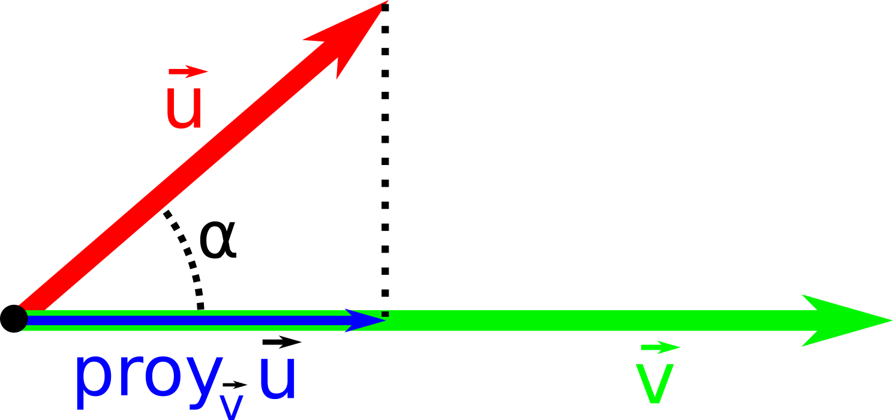

Tema 3
Vectores
Vectores
Segmento orientado es decir, una flecha
Vector fijo
Sean los puntos \[A\] y \[B\] del plano, el vector fijo \[\vec{AB}\] es el vector con origen \[A\] y extremo \[B\]
Sus características son:- Módulo: su longitud \[ |\vec{AB}| \]
- Dirección: inclinación del segmento.Pendiente de la recta que pasa por A y B.
- Sentido: Orientación del vector.
Coordenadas de un vector fijo
\[A(a_1, a_2)\] y \[ B(b_1,b_2)\]
\[\vec{AB} = (b_1 - a_1, b_2 - a_2)\]
Módulo de un vector dadas sus coordenadas
Sea \[\vec{AB}(x,y)\] un vector su módulo es:
\[|\vec{AB}| = \sqrt{x^2 + y^2}\]
1Dado los puntos del plano A(-2,3); B(1,7); C(6,7) y D(3,3). Representa los siguientes vectores, calcula sus coordenadas y su módulo:
- \[\overrightarrow{AB}\]
- \[\overrightarrow{BA}\]
- \[\overrightarrow{AC}\]
- \[\overrightarrow{DC}\]
- \[\overrightarrow{DA}\]
Vectores equipolentes
Son aquellos que tienen las mismas características (módulo dirección y sentido). También tienen las mismas coordenadas.
Vector libre
Es el conjuntos de todos los vectores equipolentes.
Se suele denotar por las coordenadas de cualquiera de sus vectores fijos representente.
2¿Cuáles de los vectores calculados en el ejercicio 1 son equipolentes? Indica y representa un par de puntos que definan un vector equipolente a \[\vec{AC}\]
Operaciones con vectores: suma
De forma gráfica

Operaciones con vectores: suma
De forma analítica...
\[(x_1, y_1) \pm (x_2, y_2) = (x_1 \pm x_2, y_1 \pm y_2)\]
3Representa y calcula de forma analítica la suma de los siguientes vectores:
- b \[\overrightarrow{u}(3,2) + \overrightarrow{v}(-1,0)\]
- c \[\overrightarrow{u}(-2,6) + \overrightarrow{v}(4,3)\]
Operaciones con vectores: producto por escalar (un número)
De forma gráfica

Operaciones con vectores: producto por escalar (un número)
De forma analítica...
\[\lambda (x_1, y_1) = (\lambda \cdot x_1, \lambda \cdot y_1)\]
4Representa y calcula de forma analítica los siguientes productos escalares de vectores:
- a \[ 4 \cdot \overrightarrow{u}(1,1)\]
- c \[ 0,5 \cdot \overrightarrow{u}(-2,6)\]
- d \[ -2 \cdot \overrightarrow{u}(1,3)\]
5Dados los puntos A(2,4), B(5,8) y C(6,4), calcula las coordenadas de los siguientes vectores:
- \[ \vec{u} = 2 \cdot \vec{AB} + 3 \cdot \vec{AC} \]
- \[ \vec{v} = 4 \cdot \vec{BA} - 3 \cdot \vec{CA} \]
- \[ \vec{z} = 3 \cdot \vec{BC} - 5 \cdot \vec{BA} \]
6Calcula los valores de \[x\] e \[y\] para que se verifiquen las siguientes igualdades:
- \[ (15, 4) = 2(x, 4) + 3(2, y) \]
- \[ (-4, y) = 3(7, 5) + 3(x, -y) \]
Combinación lineal de vectores
Decimos que un vector \[\vec{w}\] es combinación lineal de otros dos \[\vec{u}\] y \[\vec{v}\] si puede obtenerse de la siguiente forma:
\[\vec{w} = a \cdot \vec{u} + b \cdot \vec{v}\]
Dependencia/Independencia lineal de vectores
Un conjunto de vectores decimos que es linealmente dependiente si hay alguno de ellos que se pueda expresar como combinación lineal de los restantes. En caso contrario decimos que son linealmente independientes.
7Indica si son linealmente independientes los siguientes conjuntos de vectores.
- \[\vec{u}(2,3)\] y \[\vec{w}(0,8)\]
- \[\vec{u}(1,4)\] y \[\vec{w}(3, 12)\]
- \[\vec{u}(3,5)\] y \[\vec{w}(2,7)\]
- \[\vec{u}(3,5)\], \[\vec{v}(0,3)\] y \[\vec{w}(6,16)\]
- \[\vec{u}(2,7)\], \[\vec{v}(4,14)\] y \[\vec{w}(3,21)\]
Base
Una base es un conjunto de vectores que nos permite generar cualquier vector a partir de el mediante combinación lineal.
En dos dimensiones (\[\mathbb{R}^2\]) dos vectores linealmente independientes siempre forman una base.
Coordenadas
Dada una base \[\mathfrak{B} = \{\vec{u}, \vec{v}\}\] y un vector \[\vec{w} = a \cdot \vec{u} + b \cdot \vec{v}\] decimos que \[(a,b)_B\] son las coordenadas del vector \[\vec{w}\] con respecto a esa base.
Base canónica en \[\mathbb{R}^2\]
La base formada por los vectores \[\vec{i} = (1,0)\] y \[\vec{j} = (0,1)\] se denomina Base Canónica.
8Determina si los vectores \[\vec{u}\] y \[\vec{v}\] forman una base. En caso de que formen una base, indica las coordenadas del vector \[\vec{a}\] para dicha base:
- \[\mathfrak{B} = \{\vec{u}(1,2), \vec{v}(2,4)\}\] y \[\vec{a} = (5,7)\]
- \[\mathfrak{B} = \{\vec{u}(0,3), \vec{v}(1,2)\}\] y \[\vec{a} = (1,2)\]
- \[\mathfrak{B} = \{\vec{u}(3,1), \vec{v}(2,7)\}\] y \[\vec{a} = (8,9)\]
- \[\mathfrak{B} = \{\vec{u}(3,5), \vec{v}(1,5)\}\] y \[\vec{a} = (2,5)\]
9Determina las coordenadas de los siguientes vectores en la Base Canónica:
- \[ (2,5)_\mathfrak{\mathfrak{B}} \] con \[\mathfrak{B} = \{\vec{u}(2,3), \vec{j}(1,4) \} \]
- \[ (1,-4)_\mathfrak{B} \] con \[\mathfrak{B} = \{\vec{u}(1,3), \vec{j}(3,2) \} \]
Base ortogonal
Es aquella que sus vectores son perpendiculares.
Base ortonormal
Es aquella que sus vectores son perpendiculares y además estos tienen módulo 1.
10Determina si los siguientes vectores forman una base y si esta es ortogonal y/o ortonormal:
- \[ \vec{i}(4,5)\] y \[\vec{j}(-5,4) \]
- \[ \vec{i}(1,0)\] y \[\vec{j}(-1,0) \]
- \[ \vec{i}(-1,0)\] y \[\vec{j}(0,-1) \]
Producto escalar
El producto escalar de dos vectores libres \[\vec{u}\] y \[\vec{v}\] es un número real:
\[\vec{u} \cdot \vec{v} = |\vec{u}| \cdot |\vec{v}| \cdot cos(\alpha)\]
Donde \[\alpha\] es el ángulo que forman los dos vectores.
Expresión analítica
Dados dos vectores libres \[\vec{u}(x_1,y_1)\] y \[\vec{v}(x_2,y_2)\] el producto escalar de estos dos vectores es:
\[\vec{u} \cdot \vec{v} = x_1x_2 + y_1y_2\]
Expresión analítica
Demostración
11Calcula el producto escalar entre los siguientes pares de vectores:
- \[ \vec{u}(2,3)\] y \[\vec{v}(1,7) \]
- \[ \vec{u}(0,3)\] y \[\vec{v}(1,8) \]
- \[ \vec{u}(4,1)\] y \[\vec{v}(2,7) \]
Propiedades
- Propiedad conmutativa (\[ \vec{v} \cdot \vec{u} = \vec{u} \cdot \vec{v} \])
- Propiedad distributiva con respecto a la suma (\[\vec{u} \cdot (\vec{v} + \vec{w}) = \vec{u} \cdot \vec{v} + \vec{u} \cdot \vec{w})\]
- Dos vectores son ortogonales si y solo si su producto escalar es 0.
- \[\vec{u} \cdot \vec{u} = |\vec{u}|^2 > 0\]
12Comprueba si los siguientes pares de vectores son perpendiculares de forma analítica:
- \[ \vec{u}(0,3)\] y \[\vec{v}(1,0) \]
- \[ \vec{u}(3,1)\] y \[\vec{v}(-2,6) \]
- \[ \vec{u}(1,4)\] y \[\vec{v}(4,1) \]
Utilidad: Vector proyección
Utilidad: Vector proyección
\[ | proy_{\vec{v}} \vec{u} | = \frac{|\vec{v} \cdot \vec{u}|}{|\vec{v}|} \]
13Calcula el módulo de las siguientes proyecciones:
- Proyección del vector \[\vec{v}(3,5)\] sobre el vector \[\vec{u}(1,10)\]
Utilidades: Ángulo entre dos vectores
\[\vec{u} \cdot \vec{v} = |\vec{u}| \cdot |\vec{v}| \cdot cos(\alpha) \Rightarrow \\ \Rightarrow cos(\alpha) = \frac{\left| \vec{v} \cdot \vec{u} \right| }{|\vec{v}| \cdot |\vec{u}|} \]
14Dados los vectores \[ \vec{u}(3,-4)\] y \[ \vec{v} (5,6) \] calcula:
- Su producto escalar.
- El módulo de los dos vectores.
- El ángulo que forman.
- Un vector de la misma dirección y sentido que \[\vec{u}\] y que sea unitario.
- Un vector que tenga la misma dirección pero sentido contrario a \[\vec{u}\] y que tenga módulo 3.
- Un vector ortogonal a \[\vec{u}\].